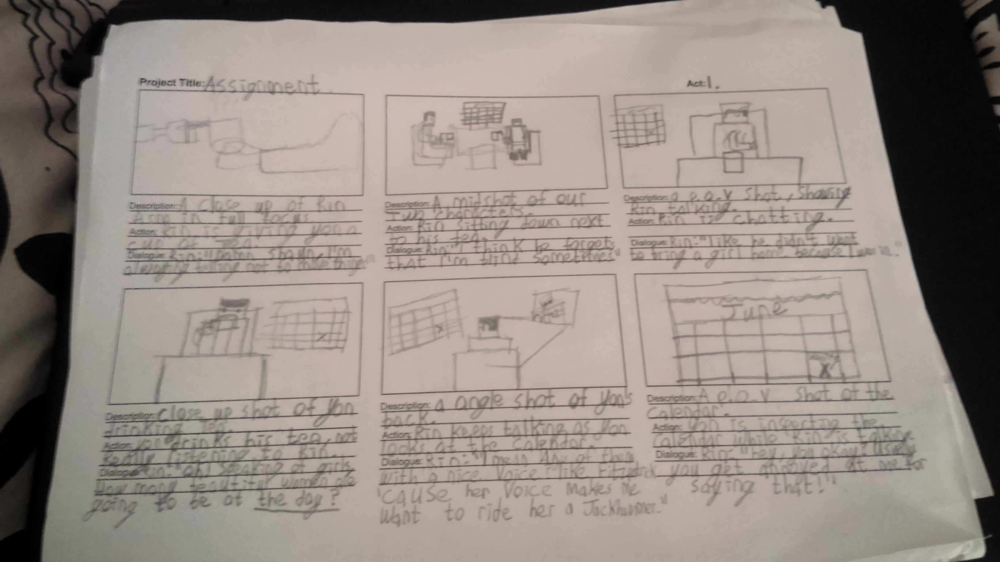
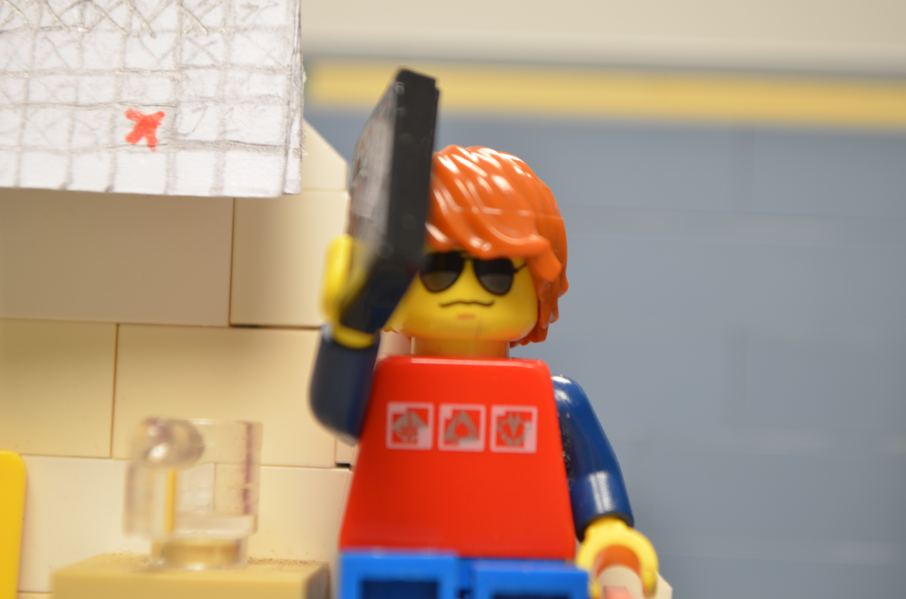
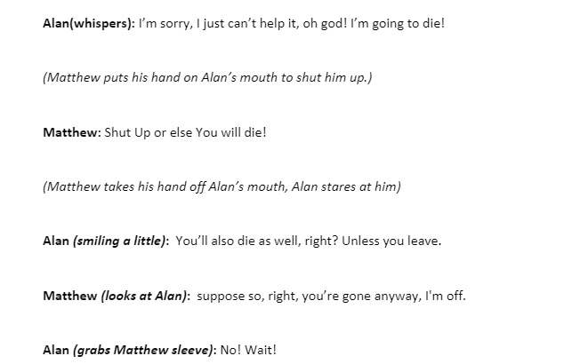

Ever since I was child I've always been a fan stories, from Disney classics to real-life historical stories, I love them and always wanted to write them. The problem is my English isn't great, I failed ordinary English twice before sitting the Junior Cert, which I did pass.
But my terrible English isn't going to stop me and no matter what my English teacher tell me, my English has improve greatly over the years! I spent My summers studying storytelling and Narrative, by watching videos on Youtube, even now I still watch videos on Storytelling.
My theasus on Storytelling is I want the viewer to take away a theme/lesson and have the reaction I want them to have, for if I want them to be sad, I'll try to make them sad. If my stories don't do either one then I feel like I've failed as a storyteller.
I've worked on two stories, one for a non-linear game called "I can't take My Eyes Off You", based on the song by the same name by Avrutin and feat charlie James, you can play it by clicking Here. The second is the script for a 3 minute film, it was a group project and I was the writer. If you wish to read the full script, please contact me and I'll send a copy of the script to you!
  